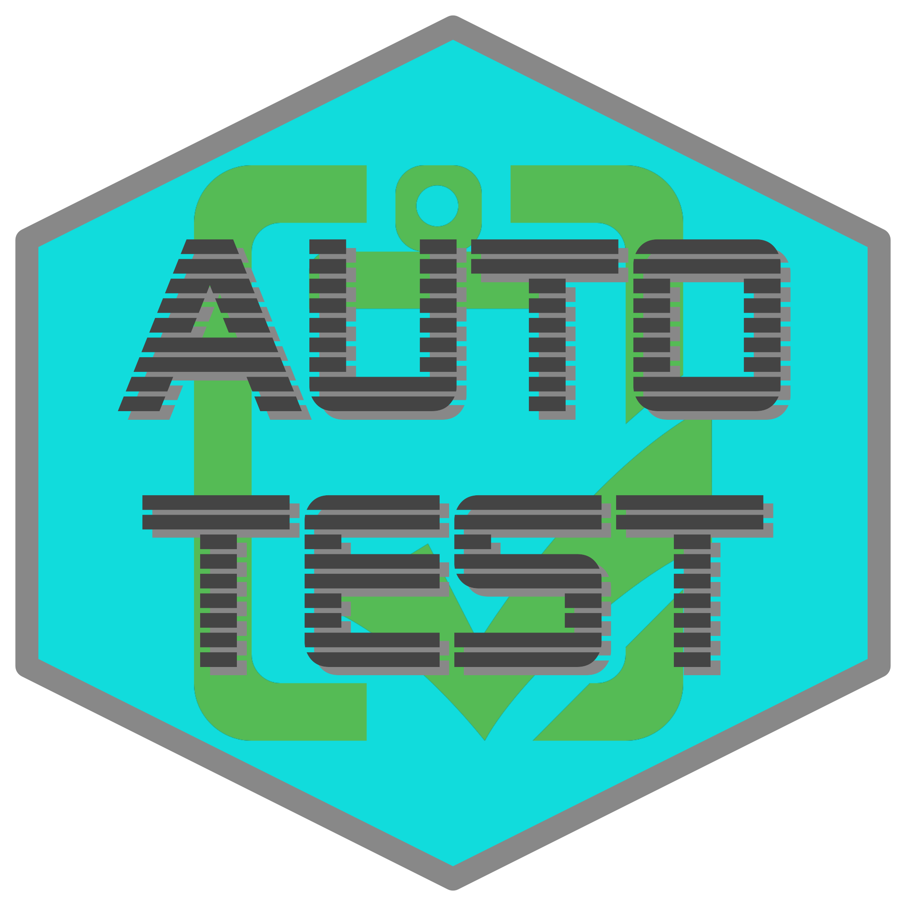

autotest 


autotest
Automatic mutation testing of R packages. Mutation in the sense of mutating inputs (parameters) to function calls. autotest primarily works by scraping documented examples for all functions, and mutating the parameters input to those functions.
Installation
The easiest way to install this package is via the associated r-universe. As shown there, simply enable the universe with
options(repos = c(
ropenscireviewtools = "https://ropensci-review-tools.r-universe.dev",
CRAN = "https://cloud.r-project.org"))And then install the usual way with,
install.packages("autotest")Alternatively, the package can be installed by running one of the following lines:
# install.packages("remotes")
remotes::install_git("https://git.sr.ht/~mpadge/autotest")
remotes::install_bitbucket("mpadge/autotest")
remotes::install_gitlab("mpadge/autotest")
remotes::install_github("ropensci-review-tools/autotest")The package can then be loaded the usual way:
Usage
The simply way to use the package is
x <- autotest_package ("<package>")The main argument to the autotest_package() function can either be the name of an installed package, or a path to a local directory containing the source for a package. The result is a data.frame of errors, warnings, and other diagnostic messages issued during package auotest-ing. The function has an additional parameter, functions, to restrict tests to specified functions only.
By default, autotest_package() returns a list of all tests applied to a package without actually running them. To implement those tests, set the parameter test to TRUE. Results are only returned for tests in which functions do not behave as expected, whether through triggering errors, warnings, or other behaviour as described below. The ideal behaviour of autotest_package() is to return nothing (or strictly, NULL), indicating that all tests passed successfully. See the main package vignette for an introductory tour of the package.
What is tested?
The package includes a function which lists all tests currently implemented.
autotest_types ()
#> # A tibble: 27 x 8
#> type test_name fn_name parameter parameter_type operation content test
#> <chr> <chr> <chr> <chr> <chr> <chr> <chr> <lgl>
#> 1 dummy rect_as_o… <NA> <NA> rectangular Convert on… "check f… TRUE
#> 2 dummy rect_comp… <NA> <NA> rectangular Convert on… "expect … TRUE
#> 3 dummy rect_comp… <NA> <NA> rectangular Convert on… "expect … TRUE
#> 4 dummy rect_comp… <NA> <NA> rectangular Convert on… "expect … TRUE
#> 5 dummy extend_re… <NA> <NA> rectangular Extend exi… "(Should… TRUE
#> 6 dummy replace_r… <NA> <NA> rectangular Replace cl… "(Should… TRUE
#> 7 dummy vector_to… <NA> <NA> vector Convert ve… "(Should… TRUE
#> 8 dummy vector_cu… <NA> <NA> vector Custom cla… "(Should… TRUE
#> 9 dummy double_is… <NA> <NA> numeric Check whet… "int par… TRUE
#> 10 dummy trivial_n… <NA> <NA> numeric Add trivia… "(Should… TRUE
#> # … with 17 more rowsThat functions returns a tibble describing 27 unique tests. The default behaviour of autotest_package() with test = FALSE uses these test types to identify which tests will be applied to each parameter and function. The table returned from autotest_types() can be used to selectively switch tests off by setting values in the test column to FALSE, as demonstrated below.
How Does It Work?
The package works by scraping documented examples from all .Rd help files, and using those to identify the types of all parameters to all functions. Usage therefore first requires that the usage of all parameters be demonstrated in example code.
As described above, tests can also be selectively applied to particular functions through the parameters functions, used to nominate functions to include in tests, or exclude, used to nominate functions to exclude from tests. The following code illustrates.
x <- autotest_package (package = "stats", functions = "var", test = FALSE)
#>
#> ── autotesting stats ──
#>
#> ✔ [1 / 6]: var
#> ✔ [2 / 6]: cor
#> ✔ [3 / 6]: cor
#> ✔ [4 / 6]: cov
#> ✔ [5 / 6]: cov
#> ✔ [6 / 6]: cor
print (x)
#> # A tibble: 206 x 9
#> type test_name fn_name parameter parameter_type operation content test
#> <chr> <chr> <chr> <chr> <chr> <chr> <chr> <lgl>
#> 1 warni… par_is_de… var use <NA> Check tha… Examples… TRUE
#> 2 warni… par_is_de… cov y <NA> Check tha… Examples… TRUE
#> 3 dummy trivial_n… var x numeric Add trivi… (Should … TRUE
#> 4 dummy vector_cu… var x vector Custom cl… (Should … TRUE
#> 5 dummy vector_to… var x vector Convert v… (Should … TRUE
#> 6 dummy negate_lo… var na.rm single logical Negate de… (Functio… TRUE
#> 7 dummy subst_int… var na.rm single logical Substitut… (Functio… TRUE
#> 8 dummy subst_cha… var na.rm single logical Substitut… should t… TRUE
#> 9 dummy single_pa… var na.rm single logical Length 2 … Should t… TRUE
#> 10 dummy return_su… var (return … (return objec… Check tha… <NA> TRUE
#> # … with 196 more rows, and 1 more variable: yaml_hash <chr>Testing the var function also tests cor and cov, because these are all documented within a single .Rd help file. Typing ?var shows that the help topic is cor, and that the examples include the three functions, var, cor, and cov. That result details the 206 tests which would be applied to the var function from the stats package. These 206 tests yield the following results when actually applied:
y <- autotest_package (package = "stats", functions = "var", test = TRUE)
#> ── autotesting stats ──
#>
#> ✔ [1 / 6]: var
#> ✔ [2 / 6]: cor
#> ✔ [3 / 6]: cor
#> ✔ [4 / 6]: cov
#> ✔ [5 / 6]: cov
#> ✔ [6 / 6]: cor
print (y)
#> # A tibble: 19 x 9
#> type test_name fn_name parameter parameter_type operation content test
#> <chr> <chr> <chr> <chr> <chr> <chr> <chr> <lgl>
#> 1 warni… par_is_de… var use <NA> Check tha… "Example… TRUE
#> 2 warni… par_is_de… cov y <NA> Check tha… "Example… TRUE
#> 3 diagn… vector_to… var x vector Convert v… "Functio… TRUE
#> 4 diagn… vector_to… var x vector Convert v… "Functio… TRUE
#> 5 diagn… vector_to… var y vector Convert v… "Functio… TRUE
#> 6 diagn… single_ch… cor use single charac… upper-cas… "is case… TRUE
#> 7 diagn… single_ch… cor method single charac… upper-cas… "is case… TRUE
#> 8 diagn… single_ch… cor method single charac… upper-cas… "is case… TRUE
#> 9 diagn… single_ch… cor use single charac… upper-cas… "is case… TRUE
#> 10 diagn… single_ch… cor use single charac… upper-cas… "is case… TRUE
#> 11 diagn… single_ch… cor method single charac… upper-cas… "is case… TRUE
#> 12 diagn… single_ch… cov use single charac… upper-cas… "is case… TRUE
#> 13 diagn… single_ch… cov method single charac… upper-cas… "is case… TRUE
#> 14 diagn… single_ch… cov use single charac… upper-cas… "is case… TRUE
#> 15 diagn… single_ch… cov method single charac… upper-cas… "is case… TRUE
#> 16 diagn… single_ch… cov use single charac… upper-cas… "is case… TRUE
#> 17 diagn… single_ch… cov method single charac… upper-cas… "is case… TRUE
#> 18 diagn… single_ch… cor method single charac… upper-cas… "is case… TRUE
#> 19 diagn… single_ch… cor use single charac… upper-cas… "is case… TRUE
#> # … with 1 more variable: yaml_hash <chr>And only 19 of the original 206 tests produced unexpected behaviour. There were in fact only 3 kinds of tests which produced these 19 results:
unique (y$operation)
#> [1] "Check that parameter usage is demonstrated"
#> [2] "Convert vector input to list-columns"
#> [3] "upper-case character parameter"One of these involves conversion of a vector to a list-column representation (via I(as.list(<vec>))). Relatively few packages accept this kind of input, even though doing so is relatively straightforward. The following lines demonstrate how these tests can be switched off when autotest-ing a package. The autotest_types() function, used above to extract information on all types of tests, also accepts a single argument listing the test_name entries of any tests which are to be switched off.
types <- autotest_types (notest = "vector_to_list_col")
y <- autotest_package (package = "stats", functions = "var",
test = TRUE, test_data = types)
#> ── autotesting stats ──
#>
#> ✔ [1 / 6]: var
#> ✔ [2 / 6]: cor
#> ✔ [3 / 6]: cor
#> ✔ [4 / 6]: cov
#> ✔ [5 / 6]: cov
#> ✔ [6 / 6]: cor
print (y)
#> # A tibble: 20 x 9
#> type test_name fn_name parameter parameter_type operation content test
#> <chr> <chr> <chr> <chr> <chr> <chr> <chr> <lgl>
#> 1 warni… par_is_de… var use <NA> Check tha… Examples… TRUE
#> 2 warni… par_is_de… cov y <NA> Check tha… Examples… TRUE
#> 3 diagn… single_ch… cor use single charac… upper-cas… is case … TRUE
#> 4 diagn… single_ch… cor method single charac… upper-cas… is case … TRUE
#> 5 diagn… single_ch… cor method single charac… upper-cas… is case … TRUE
#> 6 diagn… single_ch… cor use single charac… upper-cas… is case … TRUE
#> 7 diagn… single_ch… cor use single charac… upper-cas… is case … TRUE
#> 8 diagn… single_ch… cor method single charac… upper-cas… is case … TRUE
#> 9 diagn… single_ch… cov use single charac… upper-cas… is case … TRUE
#> 10 diagn… single_ch… cov method single charac… upper-cas… is case … TRUE
#> 11 diagn… single_ch… cov use single charac… upper-cas… is case … TRUE
#> 12 diagn… single_ch… cov method single charac… upper-cas… is case … TRUE
#> 13 diagn… single_ch… cov use single charac… upper-cas… is case … TRUE
#> 14 diagn… single_ch… cov method single charac… upper-cas… is case … TRUE
#> 15 diagn… single_ch… cor method single charac… upper-cas… is case … TRUE
#> 16 diagn… single_ch… cor use single charac… upper-cas… is case … TRUE
#> 17 no_te… vector_to… var x vector Convert v… (Should … FALSE
#> 18 no_te… vector_to… var y vector Convert v… (Should … FALSE
#> 19 no_te… vector_to… cor x vector Convert v… (Should … FALSE
#> 20 no_te… vector_to… cor y vector Convert v… (Should … FALSE
#> # … with 1 more variable: yaml_hash <chr>Those tests are still returned from autotest_package(), but with test = FALSE to indicate they were not run, and a type of “no_test” rather than the previous “diagnostic”.
Can autotest automatically create tests in my tests directory?
Not yet, but that should be possible soon. In the meantime, there are testthat expectations, listed in the main package functions, which enable autotest to be used in a package’s test suite.
Prior work
- The
great-expectationsframework for python, described in this medium article. -
QuickCheckfor Haskell -
mutatefor ruby -
mutantfor mutation of R code itself